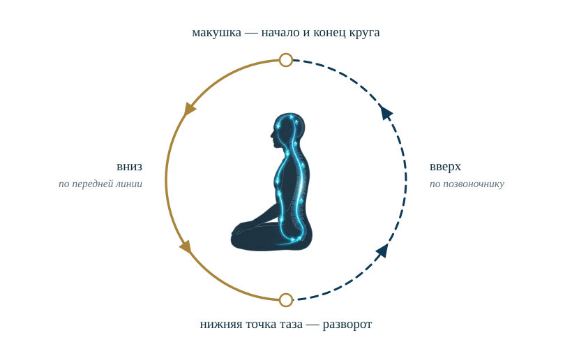
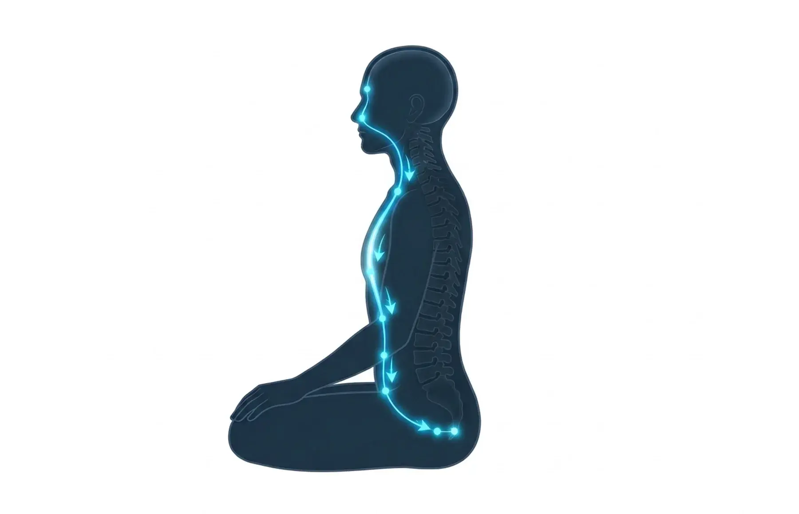
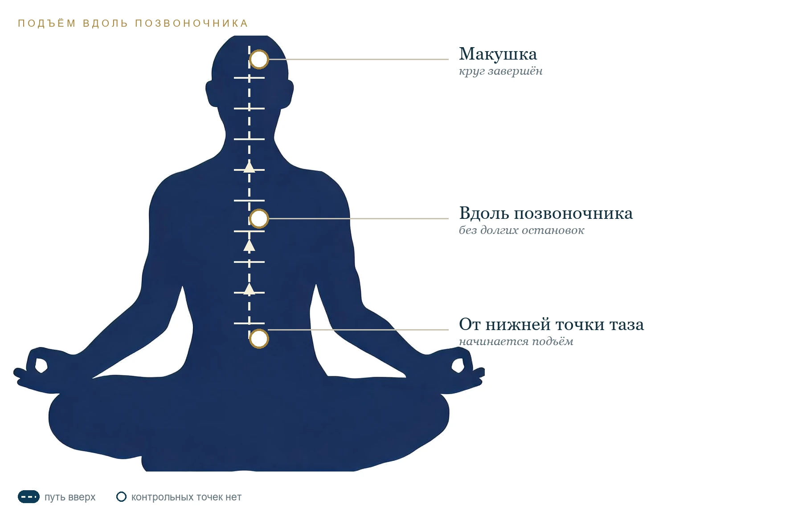
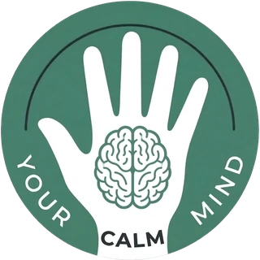

Про практику
Неоорбітальна медитація
Практика заспокоєння розуму та внутрішнього зосередження.
Повна інструкція: як вибрати мантру, провести її по тілу по колу та перейти до внутрішньої тишини.
Дивитися технікуПро концепцію практики
Що це за практика
Неоорбітальна медитація спрямована на глибоке заспокоєння розумової активності, зменшення внутрішнього діалогу та досягнення стану внутрішньої тишини.
На відміну від класичних медитацій на концентрацію (наприклад, шаматхи), де головне завдання - утримувати увагу на певному об'єкті, тут використовується інший принцип: послідовне переміщення подумки промовлюваної мантри по визначеній траєкторії тіла.
Основна ідея практики - поступово переключити увагу зі звичного потоку думок на повторення нейтрального слова, а потім провести це повторення через визначені точки тіла.
За суб'єктивними відчуттями практикуючих, це може супроводжуватися
- значним зменшенням кількості думок;
- послабленням або повним припиненням внутрішнього діалогу;
- відчуттям внутрішньої тишини;
- відчуттям наповненості, тепла або руху енергії в тілі;
- станом глибокого розслаблення та своєрідного перезавантаження розуму.
Відчуття індивідуальні. Неоорбітальна медитація - авторська практика, і описані ефекти ґрунтуються на суб'єктивному досвіді, а не на встановлених наукових дослідженнях саме цієї техніки.
Особливості та частота
Скільки і як часто практикувати
Практика відрізняється від м'якших технік - спостереження за диханням або звичайного розслаблення. Вона передбачає інтенсивне зосередження уваги і може відчуватися як глибша.
Тому не варто прагнути виконувати її якнайчастіше або збільшувати тривалість сеансів.
- 20 хвилинтривалість сеансу
- до 2 разівна день
- ранок і вечіроптимальний час
Цього цілком достатньо для регулярної практики.
Тут доречна аналогія з м'ятним чаєм: одна чашка може бути приємною і корисною, але велика кількість не обов'язково принесе додаткову користь. У медитації також важлива помірність.
Якщо під час практики виникає дискомфорт, запаморочення або неприємні відчуття, слід припинити її та повернутися до звичайного стану.
Положення тіла
Без лотоса й спеціальної підготовки
Одна з переваг техніки - відсутність суворих вимог до положення тіла. Не обов'язково приймати позу лотоса або використовувати спеціальні медитативні положення.
- сидячи на стільці
- у кріслі
- лежачи
- стоячи
- у громадському транспорті
Головна умова - зручне положення, у якому можна спокійно утримувати увагу на практиці.
Не рекомендується виконувати медитацію під час керування автомобілем, роботи з механізмами або будь-якої іншої діяльності, що потребує постійної концентрації та швидкої реакції.
Вибір персональної мантри
Слово, яке нічого не означає
Перший і один із найважливіших етапів - вибір мантри. Мантрою в цій практиці називається слово, яке людина подумки повторює протягом усієї медитації.
Це може бути практично будь-яке слово: назва місця, ім'я людини, «тепло», «добро» або будь-яке інше коротке слово.
Однак є важлива умова: найкраще вибирати слово, яке не викликає жодних емоцій та асоціацій.
Чому це важливо. Якщо мантра пов'язана з приємними спогадами, людьми або подіями, мозок може мимоволі переключатися на пов'язані з нею образи та асоціації. У результаті увага буде спрямована не лише на повторення слова, а й на спогади, що виникають. Тому для цієї техніки краща максимально нейтральна мантра.
Три критерії при виборі
-
Емоційна нейтральність
Слово не повинно викликати ні позитивних, ні негативних емоцій.
-
Відсутність асоціацій
Воно не повинно нагадувати про конкретних людей, події або ситуації.
-
Комфортне звучання
Слово повинно легко промовлятися подумки, не викликати внутрішнього опору або дискомфорту.
Бажано підібрати індивідуальну мантру, яка відповідатиме всім трьом критеріям.
Техніка виконання
Шість етапів одного кола
Практика складається з кількох послідовних етапів: від першої хвилини зосередження до спокійного повернення до звичайного стану.

-
Первинне зосередження
Прийміть зручне положення і заплющте очі. Почніть подумки повторювати вибрану мантру.
Не потрібно підбирати певний ритм чи швидкість. Повторюйте слово так, як вам зручно: швидко, повільно або з невеликими проміжками.
Завдання перших 2-3 хвилин - утримувати увагу виключно на мантрі, поступово відволікаючись від сторонніх думок.
На цьому етапі мантра подумки промовляється у звичному просторі голови, як звичайна внутрішня мова.
-
Мантра в області між бровами
Після 2-3 хвилин повторення уявіть, що мантра переміщується в область між бровами. Продовжуйте подумки промовляти слово, але тепер уявляйте, що його внутрішнє звучання знаходиться саме в цій точці.
Не потрібно фізично напружувати м'язи обличчя або намагатися викликати якісь відчуття. Достатньо спрямувати туди свою увагу.
-
Рух вниз по передній частині тіла
Продовжуючи подумки повторювати мантру, починайте поступово переміщувати її вниз за траєкторією:
- Область між бровами. Початкова точка переміщення.
- Область носа. Мантра подумки опускається до кінчика носа.
- Область горла. Переміщуємо увагу до горла і ненадовго затримуємося.
- Область сонячного сплетіння. Продовжуємо рух вниз і робимо невелику зупинку.
- Область нижче сонячного сплетіння. Поступово опускаємо мантру далі.
- Область нижче пупка. Ненадовго затримуємо увагу в цій точці.
- Нижня точка таза. Завершуємо рух по передній частині тіла.

Сім точок передньої лінії. На кожній точці мантра продовжує звучати. Для тих, хто знайомий із системою чакр, ці точки можна співвіднести з відповідними енергетичними центрами. Іншим достатньо орієнтуватися на описані анатомічні області.
На кожній точці продовжуйте подумки повторювати мантру. Не потрібно поспішати, але й надмірно довго затримуватися в окремих місцях не слід.
-
Рух вгору по хребту
Після досягнення нижньої точки таза починається зворотний рух. Тепер подумки ведіть мантру вгору вздовж хребта, поступово повертаючись до верхньої частини голови.
Рухайтеся послідовно, не поспішаючи, уявляючи, як мантра піднімається вздовж хребта і досягає маківки. Після цього цикл завершується і починається наступне коло.

Підйом іде вздовж хребта до маківки, без довгих зупинок у проміжних точках. Під час руху вгору не потрібно надовго зупинятися в проміжних точках. Основна увага приділяється безперервному руху мантри за заданою траєкторією.
-
Перехід у стан внутрішньої тишини
Під час другого кола або наступних повторень може статися зміна: внутрішній голос, яким ви подумки промовляєте мантру, поступово стає тихішим.
У якийсь момент внутрішнє промовляння може практично зникнути або повністю припинитися.
Якщо це сталося, не потрібно намагатися повернути внутрішній голос або спеціально продовжувати промовляти мантру. Дозвольте цьому стану зберігатися природно.
Вважається, що саме в цей момент досягається одна з основних цілей практики - послаблення внутрішнього діалогу та перехід до стану розумової тишини.
-
Завершення практики
Після припинення внутрішнього промовляння залиштеся в цьому стані ще приблизно на 5 хвилин. Не потрібно нічого спеціально робити, аналізувати або намагатися викликати додаткові відчуття.
Просто спостерігайте:
- за станом тіла;
- за внутрішніми відчуттями;
- за звуками довкола;
- за думками, що виникають і зникають.
Очі можна трохи приплющити, поступово повертаючи увагу до простору навколо. Завершуйте практику спокійно, без різкого перемикання.
Основні принципи
Що важливо пам'ятати
Шість положень, без яких техніка втрачає сенс і перетворюється на посилене зосередження.
Нейтральна мантра
Чим менше слово викликає асоціацій, тим менше приводів для відволікання уваги.
Відсутність напруження
Не потрібно змушувати себе концентруватися або фізично відчувати рух мантри.
Послідовність
Дотримуйтеся заданої траєкторії: від області між бровами вниз по передній частині тіла, потім вгору вздовж хребта.
Природне припинення мовлення
Якщо внутрішній голос затихає, не потрібно його відновлювати.
Відсутність очікувань
Не слід намагатися штучно викликати певні відчуття або досягти результату будь-якою ціною.
Помірність
Не збільшуйте тривалість і частоту занять, прагнучи прискорити ефект.
Рекомендований режим
Параметри практики
Орієнтири, за якими зручно вибудувати регулярну практику.
| Тривалість | 20 хвилин |
|---|---|
| Частота | До 2 разів на день |
| Час | Ранком і ввечері |
| Положення тіла | Будь-яке зручне |
| Мантра | Індивідуальна, нейтральна |
| Первинне повторення | 2-3 хвилини |
| Завершення | Близько 5 хвилин |
Висновок
Не боротися з думками
Неоорбітальна медитація - це техніка, в основі якої лежить послідовне переміщення нейтральної мантри по визначеній траєкторії тіла з подальшим переходом до стану внутрішньої тишини.
Її головна особливість полягає не в концентрації на одному об'єкті, як у класичних медитативних практиках, а в поступовому послабленні внутрішнього мовлення за допомогою спрямованої уваги.
Практика не потребує спеціальної підготовки, обладнання або певного положення тіла. Головне - правильно підібрати мантру, дотримуватися послідовності рухів і не намагатися форсувати результат.
Основний принцип: не боротися з думками, не придушувати їх і не намагатися силоміць зупинити розум. Потрібно просто дотримуватися техніки і дозволити процесу відбуватися природно.
Контакт
Питання щодо практики
olegzzl@zohomail.eu